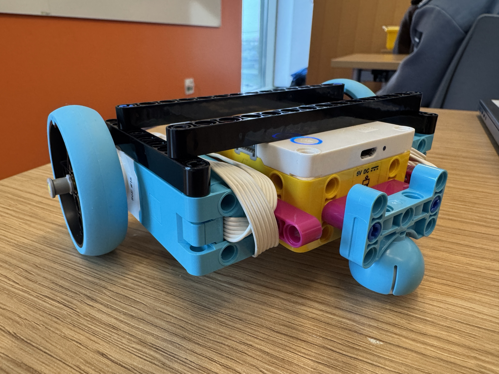
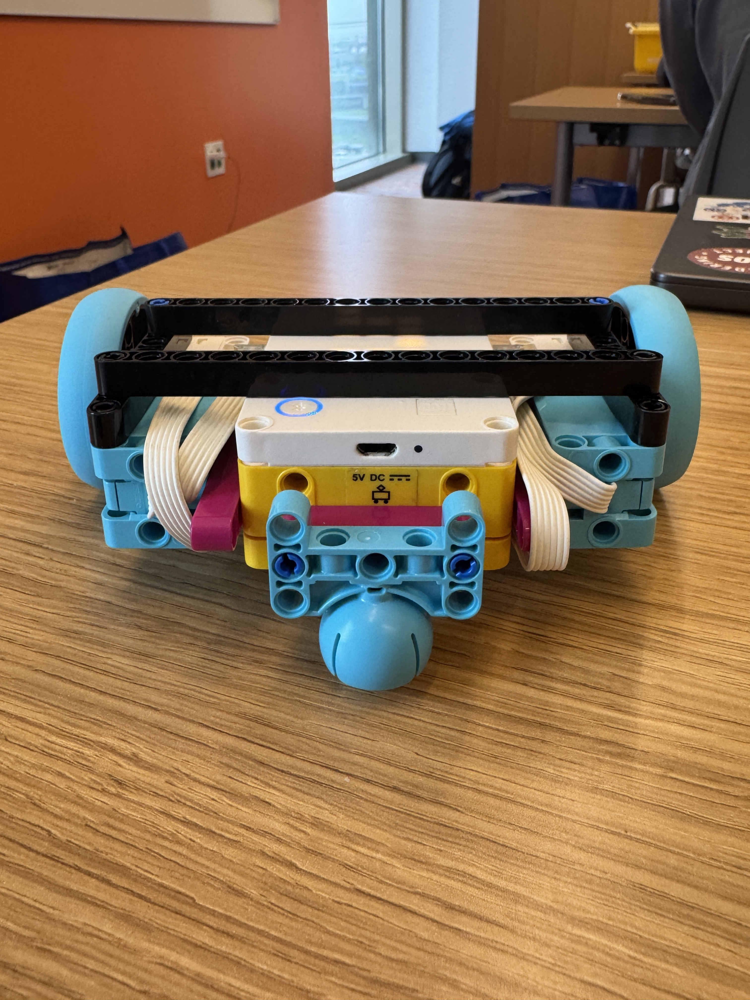

Creating the car was quite simple. The hardest part was actually figuring out how to prompt AI to code the SPIKE Prime Hub to do what I wanted correctly. I experimented with motor speeds and directions and learned a couple of things in the process! I tried to get the car to parallel park, but I had trouble figuring out how to make the S-shaped pattern needed to parallel park. I believe that if I spent a little extra time on it, it's definitely achievable. Regardless, I was able to get it to park... kind of. It turned into the allocated spot and made a 90-degree turn. Overall, this was a really fun project, and I want to test how far I can push the coding to create more exciting movements later on.